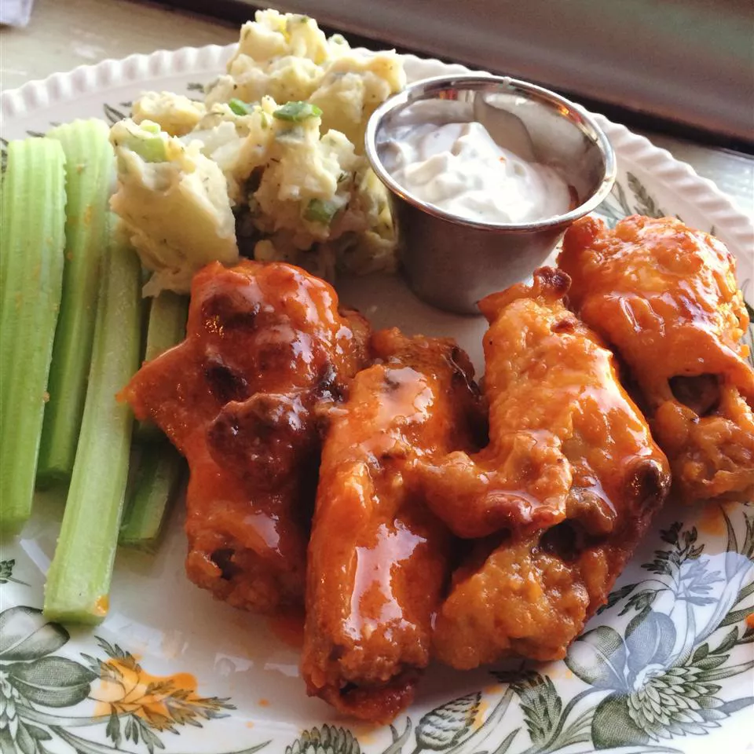

Fire Hotwings

Really Tasty Wings!
Want to learn how to make some really tasty and juicy hotwings? Well look no further, because down below is a
quick and simple recipe that will blow your tastebuds off! As you keep scrolling you will find a very detailed
explanation of how to make the best wings you never you could make by stratch in a few simple steps. This recipe
will have your family and friends begging you for more.
Ingredients
- Chicken Wings
- Flour
- Butter
- Franks RedHot sauce
- Cayenne pepper, Garlic powder, and Salt.
Steps
- Line a baking sheet with aluminum foil, and lightly grease with cooking spray.
- Place flour, cayenne pepper, garlic powder, and salt into a resealable plastic bag, and shake to mix. Add
chicken wings, seal the bag, and toss until well coated with the flour mixture. Transfer wings to the
prepared baking sheet and refrigerate for at least 1 hour.
- While the oven is preheating, whisk together melted butter and hot sauce in a small bowl. Dip wings into
butter mixture, and place back on the baking sheet.
- Franks RedHot sauce
- Bake in the preheated oven for 20 minutes. Flip wings and continue to cook until crispy on the outside and
no longer pink in the center, about 25 more minutes.